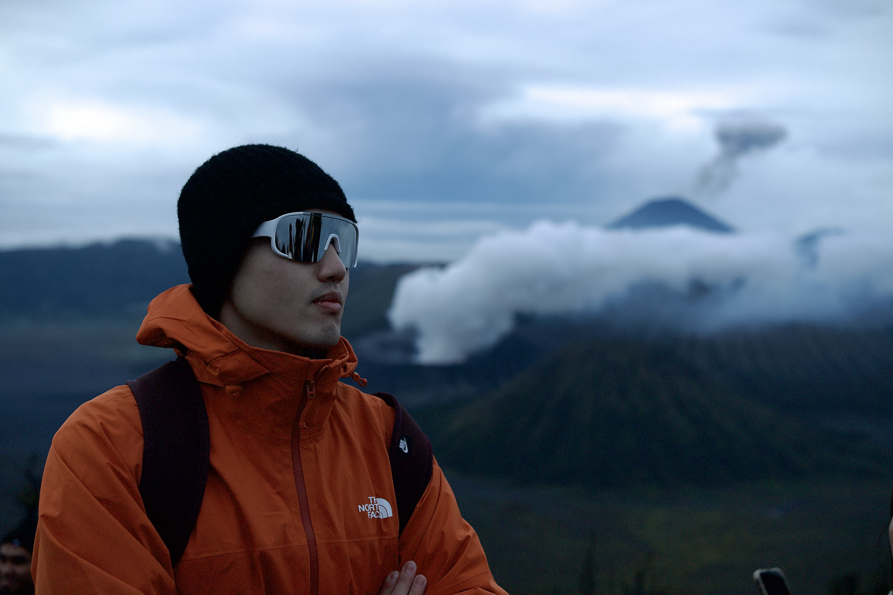
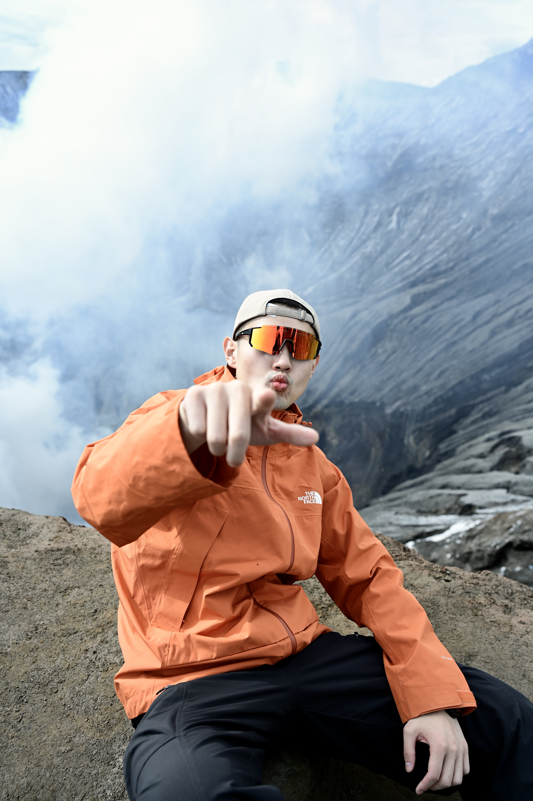
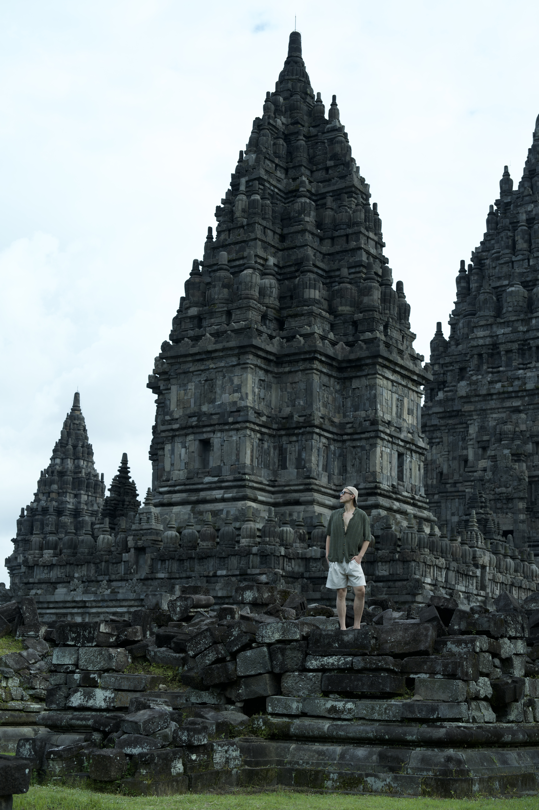
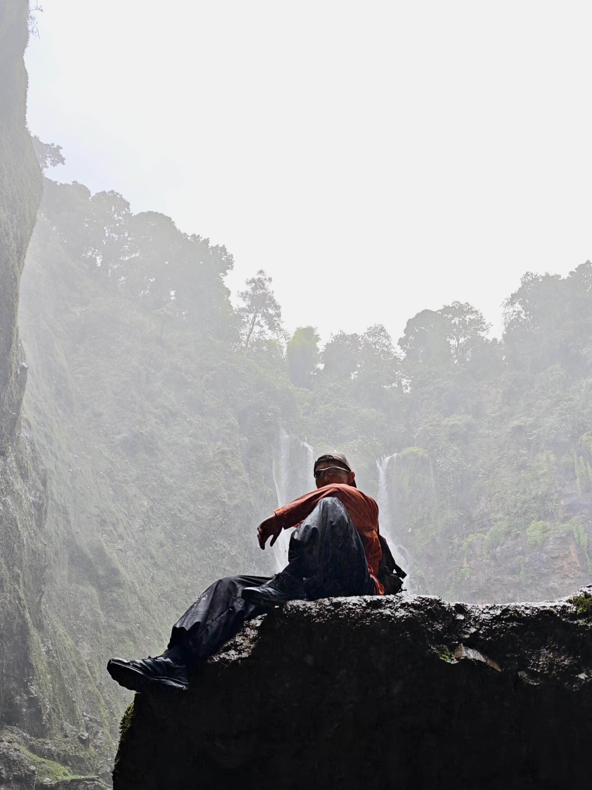
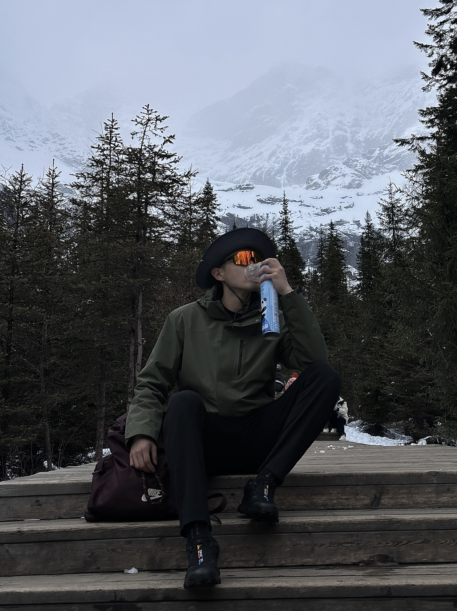
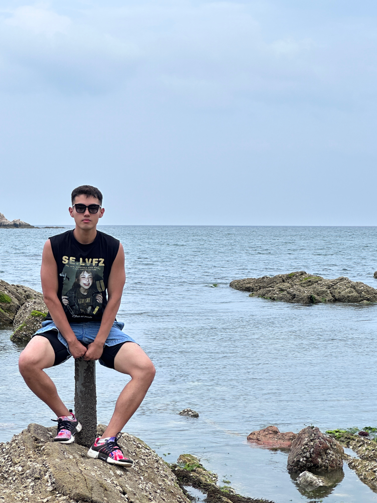
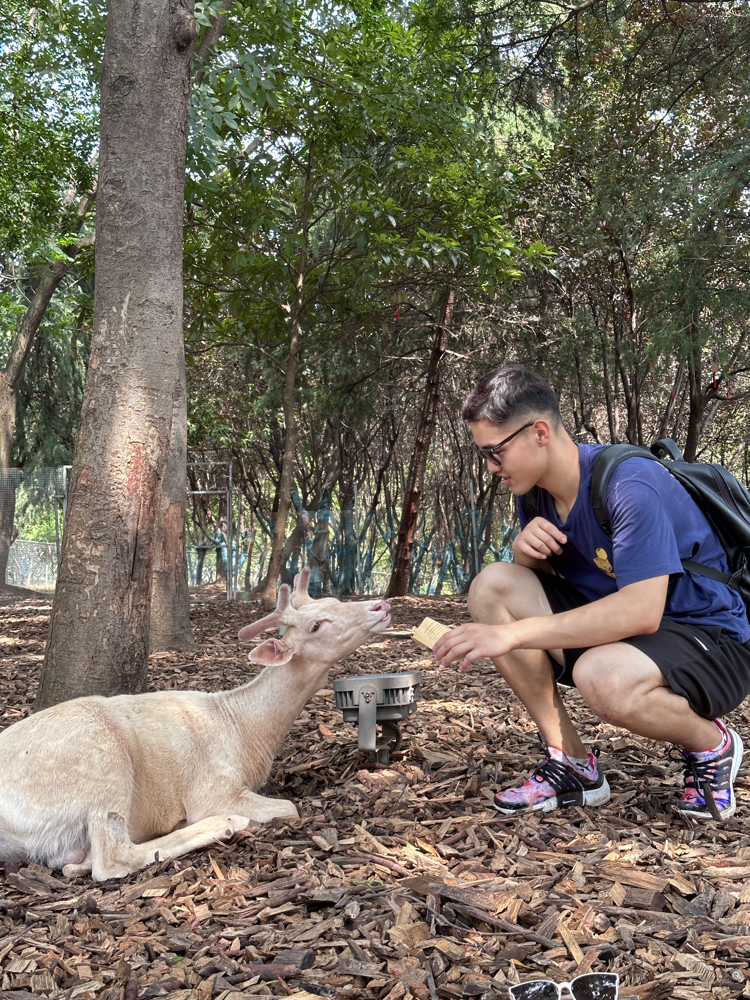
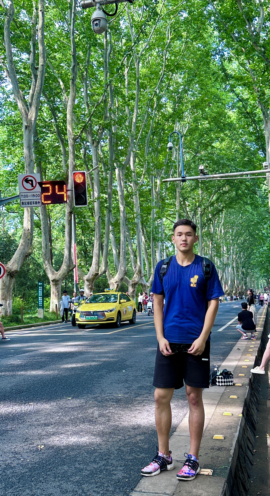
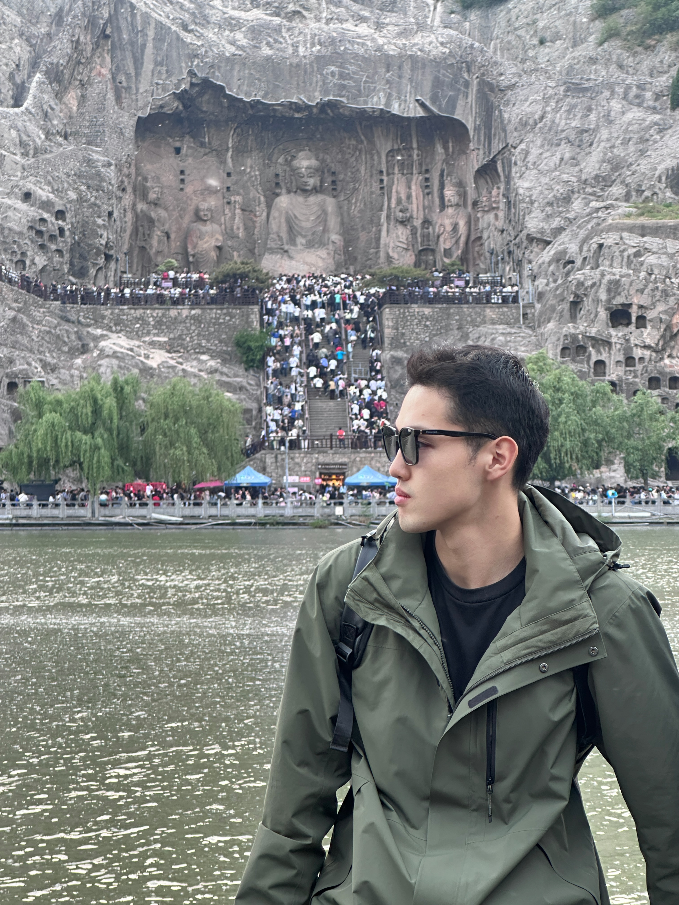

Beyond
Basketball
Basketball is a big part of my life beyond research. At Taiyuan University of Technology, I captained both the university’s CUBAL Division II team and the College of Electronic Information Engineering team, competing at provincial and city levels.

- National Second-Class Athlete
- Basketball · China
- University & College Team Captain
- CUBAL Division II & College of Electronic Information Engineering
- Provincial Runner-up
- Shanxi University Basketball Championship
Division II · Dec 2023 - City Champion
- 6th Jinzhong City Games · 2023
University Student Division · Men’s Campus Group
Travel

















